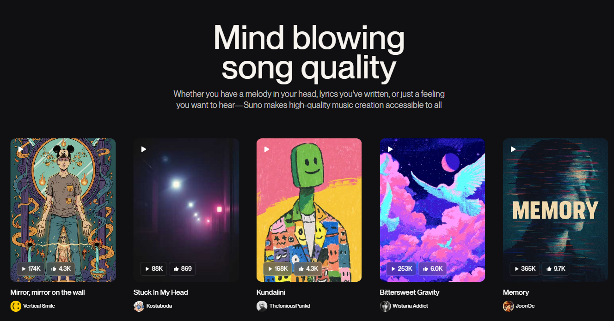

Suno AI: When music meets machine.

If you thought AI was only good at writing emails you pretend are personal, think again — now it’s composing music, too. Suno AI is one of the most talked-about music generators, pumping out surprisingly polished tracks from text prompts. The idea of machines making music isn’t new — experimental systems have been composing since the days when MIDI sounded futuristic and autotune was the pinnacle of human achievement. But Suno leans into modern machine learning, producing full-length songs with coherent melodies, rhythms, lyrics, and even stylistic flair without a human touching an instrument.
What sets Suno apart isn’t that it can make noise — your smoke detector can do that too — but that it can make *good* noise. Users routinely report that the AI’s output can feel earned: verses that don’t immediately collapse into randomness, hooks that actually hook, and genre stylings that are recognizably… genre-y. Of course, the history of AI music has plenty of awkward moments — from tinny piano loops to “experimental” harmonies that sounded like cats practicing scales — but models like Suno are a leap forward. Whether you’re a producer looking for inspiration, a meme-maker searching for the perfect backing track, or just curious what your prompt sounds like as a dubstep-French ballad crossover, Suno generally delivers something coherent enough to hum after the browser tab closes.
This isn’t to say AI has replaced human musicians — yet. There’s still something ineffable about intentional
creative expression, no matter how clever the algorithms get. But for a technology that not long ago could barely
generate non-human-sounding audio, Suno’s results are downright impressive. If you want to try letting a machine
take a stab at your next hit single, start here:
suno.com/home